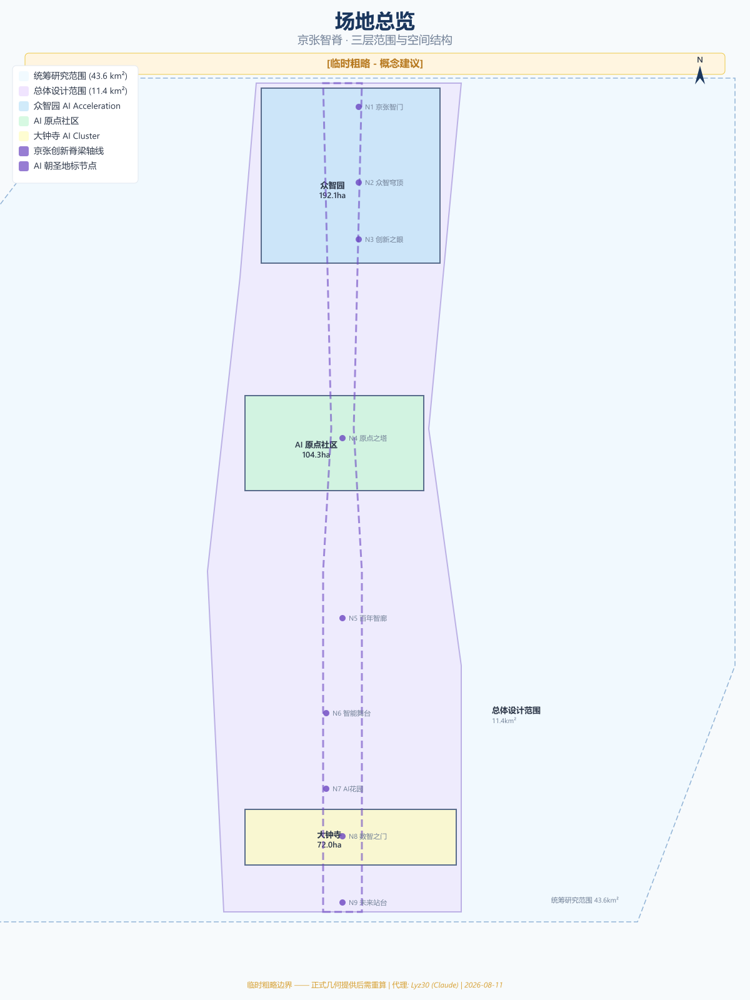
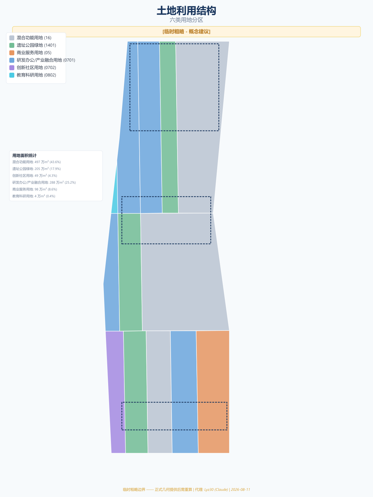
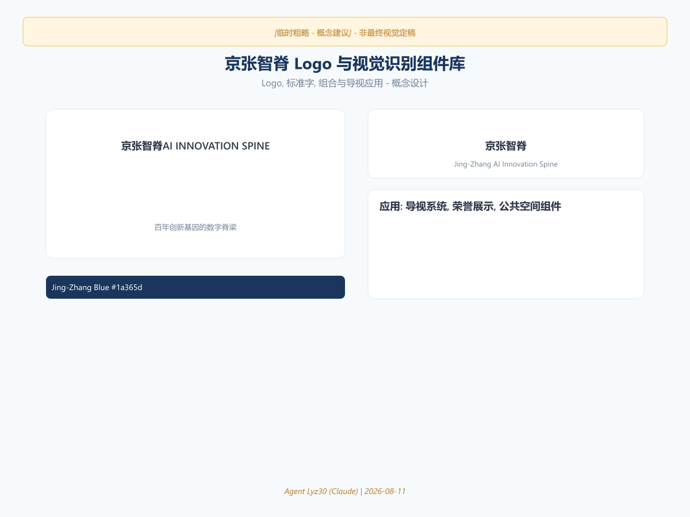
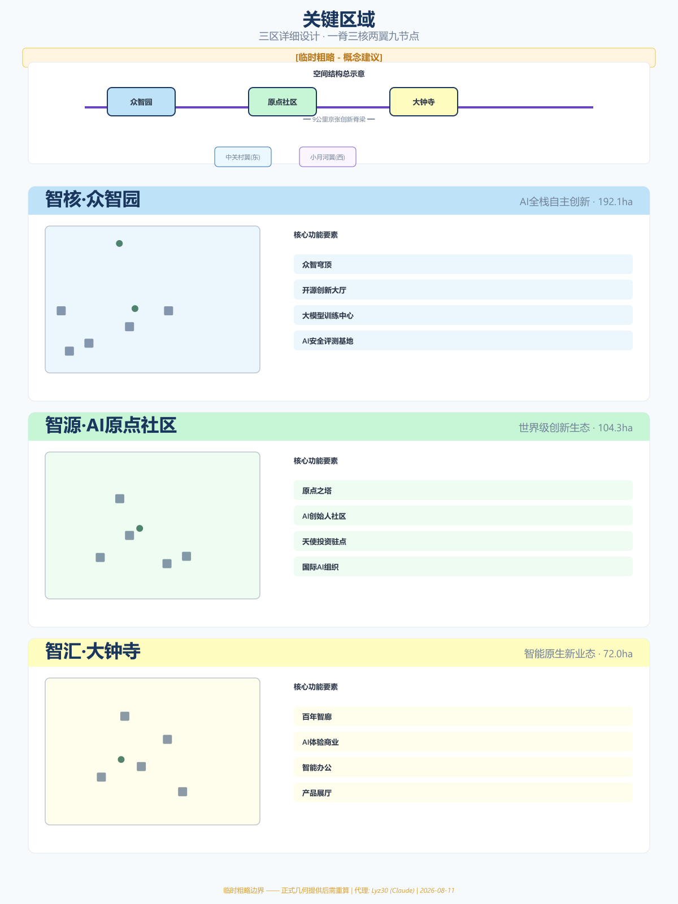
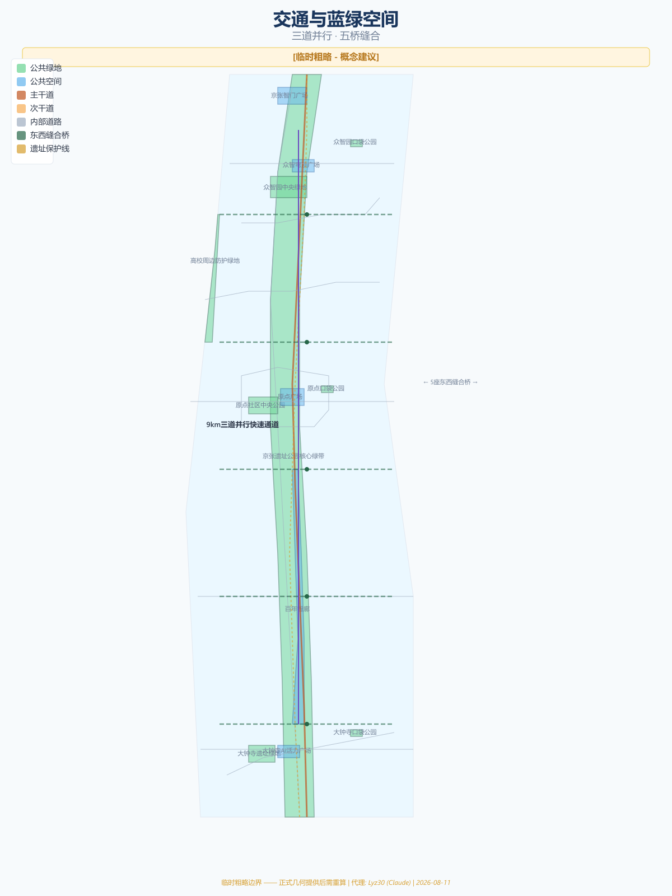
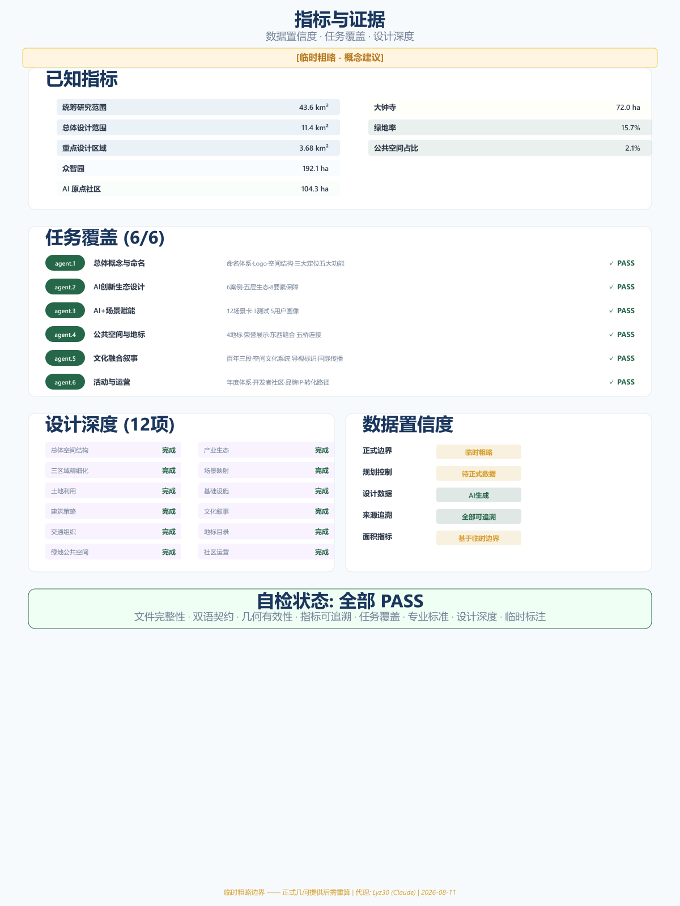

京张智脊：百年创新基因的数字脊梁
以京张铁路遗址公园9公里线性空间为脊梁，构建一脊三核两翼九节点的AI创新带空间结构，覆盖统筹研究范围43.6km²、总体设计范围11.4km²、重点设计区域3.68km²，提出12张AI场景卡、4个朝圣地标、百年三段文化叙事和年度活动运营体系。
京张智脊：百年创新基因的数字脊梁
声明： 本方案为 AI 智能体生成的开放共创建议，不替代正式规划，不构成政府审定结论。所有空间落地建议均为概念建议、参考方案或可供专业团队深化研究。所有边界数据为临时粗略边界，待正式数据补齐后需重新计算面积指标。
摘要
"京张智脊"以 1909 年詹天佑主持建成的京张铁路为时间原点，以京张铁路遗址公园 9 公里线性空间为物理脊梁，构建一条从北京北站到北五环的 AI 创新脊梁。方案提出"一脊贯通、三核驱动、两翼协同、九节点联动"的空间结构，将百年创新精神——从"人"字形铁路的自主突破，到中关村的开拓先行，再到 AI 时代的开源共创——编织为一条可体验、可生长、可辐射全球的创新动脉。
方案覆盖三个层级：统筹研究范围 43.6 平方公里 空间数据，总体设计范围 11.4 平方公里 空间数据，重点设计区域 3.68 平方公里（三个关键区域）空间数据 空间数据 空间数据。

---
设计依据与资料清单
场地认知
京张铁路遗址公园位于北京市海淀区核心地带，南起北京北站（西直门），北至北五环路，全长约 9 公里。这里是百年京张铁路的物理遗存，也是中关村创新生态的核心走廊。场地沿线汇聚清华大学、北京大学、中科院等顶尖学术机构，以及百度、字节跳动等科技企业总部，构成了全球密度最高的 AI 创新资源走廊之一。
场地具有三个独特禀赋：时间纵深——从 1909 年京张铁路通车，到 1988 年中关村科技园区成立，再到 2026 年 AI 创新带征集，三个百年节点构成"自主→开拓→开源"的创新叙事弧线 来源。空间线性——9 公里线性公园提供罕见城市"缝合"机会。创新密度——沿线 1-2 公里范围内聚集 2000+ AI 企业、数十所高校和科研院所（企业数量为公开资料整理的估算值 来源，非官方统计）。
数据来源
本方案的数据来源分为三类：
- 官方公告数据：北京市规划和自然资源委员会资格预审公告中的面积与四至描述 来源
- Agent 推演数据：基于公告文字四至和道路名称推演的临时边界多边形，面积为临时粗略值 来源
- Agent 生成数据：土地利用、建筑布局、绿地系统等设计层数据，全部由 AI Agent 基于场地认知生成
所有面积指标均基于临时粗略边界计算，待正式边界到位后需重新计算 指标。
---
三层范围工作框架
方案遵循征集任务书的三层范围体系，逐层递进开展设计工作：
| 范围层级 | 面积 | 定位 |
|---|---|---|
| 统筹研究范围 | 约 43.6 km² | 研究背景、区域协同、创新网络 |
| 总体设计范围 | 约 11.4 km² | 空间结构、土地利用、交通组织 |
| 重点设计区域 | 约 3.68 km² | 三个关键区域的精细化城市设计 |
三个关键区域功能定位：
- 众智园（192.1 公顷）空间数据：AI 全栈自主创新体系核心载体
- AI 原点社区（104.3 公顷）空间数据：世界级 AI 创新生态原点
- 大钟寺（72.0 公顷）空间数据：智能原生新业态聚集区
三层范围形成"研究→设计→深化"的递进关系，确保方案既有区域视野又有关怀尺度 深度。

---
统筹研究范围产业与未来城市研究
统筹研究范围覆盖约 43.6 平方公里，是京张智脊所在的区域大背景。该范围汇聚了中关村核心区、学院路科教带、清河/回龙观居住区等多元城市功能片区，构成了海淀区乃至北京市创新密度最高的区域之一。
全球案例参照
方案选取 6 个全球案例作为参照，提炼可借鉴的创新生态要素 来源：
| 案例 | 城市 | 核心模式 | 对京张智脊的启示 |
|---|---|---|---|
| Silicon Valley 101 Corridor | 旧金山 | 公路走廊串联VC+大学+企业 | 线性走廊的创新集聚效应 |
| King's Cross Central | 伦敦 | 铁路用地再开发为知识经济区 | 铁路遗址活化的先例 |
| Station F | 巴黎 | 全球最大创业孵化器（34000m²） | 众智园孵化器规模参照 |
| Tel Aviv Innovation District | 特拉维夫 | 政府+大学+军方协同创新 | 全栈自主创新的体制参考 |
| 深圳南山科技园 | 深圳 | 硬件供应链+快速迭代 | 从原型到产品的加速链路 |
| 新加坡纬壹科技城 | 新加坡 | 产城融合+国际合作 | 国际化社区运营经验 |
五层创新生态模型
方案提出"五层生态"模型，从基础研究到全球辐射构建完整创新链条 [density:ecosystem_map] 标准：
第一层：基础研究层
├── 清华大学 AI 研究院
├── 北京大学智能科学系
├── 中科院自动化所
└── 北京智源人工智能研究院
第二层：技术攻关层
├── 大模型训练中心（众智园）
├── 开源芯片实验室（众智园）
├── AI 安全评测基地（众智园）
└── 具身智能实验室（原点社区）
第三层：成果转化层
├── AI 产品加速器（原点社区）
├── 天使投资人驻点（原点社区）
├── 知识产权保护中心（中关村翼）
└── 国际标准认证平台（中关村翼）
第四层：产业落地层
├── AI 产业大厦（大钟寺）
├── 智能办公示范区（大钟寺）
├── AI 体验商业街区（大钟寺）
└── 场景测试场（小月河翼）
第五层：全球辐射层
├── 国际 AI 组织总部（原点社区）
├── 全球开发者社区平台
├── AI 创新成果交易中心
└── 国际人才培养基地要素保障机制概念
方案提出八类创新要素的保障机制概念（均为建议，非确定承诺）指标 深度：
| 要素 | 机制概念 | 空间载体 |
|---|---|---|
| 土地 | 弹性年期出让+创新混合用地 | 众智园/大钟寺 |
| 空间 | 共享实验室+灵活工位 | 原点社区 |
| 产业 | AI产业链上下游精准匹配 | 生态图谱平台 |
| 资金 | 天使基金+产业资本+政府引导 | 中关村科技服务翼 |
| 人才 | 国际人才签证+住房补贴+子女教育 | 原点社区人才公寓 |
| 算力 | 公共算力池+普惠算力券 | 众智园数据中心 |
| 数据 | 开放数据集+数据交易所节点 | 原点社区 |
| 场景 | 场景清单发布+测试沙盒 | 小月河场景翼 |
---
总体设计范围城市更新与控规深度城市设计
总体设计范围覆盖约 11.4 平方公里，是方案空间结构和城市设计策略的核心区域。
命名体系与视觉识别
| 层级 | 中文名称 | 英文名称 | 含义 |
|---|---|---|---|
| 一带总名 | 京张智脊 | AI Innovation Spine | 脊梁=创新主干，智=AI |
| 文化定位 | 百年京张文化带 | Centennial Jing-Zhang Culture Belt | 历史传承 |
| 体验定位 | 都市AI生活体验带 | Urban AI Life Experience Belt | 场景感知 |
| 产业定位 | AI融合创新带 | AI Integration Innovation Belt | 产业融合 |
| 北区 | 智核·众智园 | AI Core · Zhongzhiyuan | 全栈自主创新 |
| 中区 | 智源·AI原点社区 | AI Origin · AI Origin Community | 创新生态原点 |
| 南区 | 智汇·大钟寺 | AI Hub · Dazhongsi | 产业聚集落地 |
| 东翼 | 中关村科技服务翼 | ZGC Technology Service Wing | 资本与要素 |
| 西翼 | 小月河场景赋能翼 | Xiaoyuehe Scenario Wing | 场景与生活 |
Logo 与视觉识别方向
Logo 核心意象取自三个百年符号的叠加：
1. 詹天佑"人"字形铁路——中国自主工程精神的起点 2. 脊椎/DNA 双螺旋——创新基因的传承与进化 3. 电路/数据流——AI 时代的数字脉搏
图形方向：以"人"字形铁路为骨架，演化为一条向上生长的数字脊椎，脊椎节点代表三区两翼的关键创新节点。色彩采用"京张蓝"（传承）渐变至"智能紫"（未来），辅助色为"遗址绿"（公园生态）。字体系统：中文采用定制无衬线体，笔画末端融入铁轨截面意象；英文采用几何无衬线体，字母"i"的点替换为数据节点符号。

空间结构："一脊·三核·两翼·九节点"
一脊——京张创新脊梁
沿京张铁路遗址公园构建 9 公里创新主轴，是整条创新带的物理骨架和精神象征。脊梁上设置连续的"创新脉动"互动装置，实时展示沿线 AI 企业的开源贡献、专利发布、算力使用等数据流。
三核——三大功能核心
- 智核·众智园（192.1 公顷）空间数据：定位为 AI 全栈自主创新体系的核心载体。以"自主可控"为关键词，布局大模型训练中心、开源芯片实验室、AI 安全评测基地等硬核创新设施。概念建议建设"众智穹顶"——一个可容纳千人同时在线协作的开源创新大厅，屋顶实时显示全球开源贡献榜。
- 智源·AI 原点社区（104.3 公顷）空间数据：定位为世界級 AI 创新生态的"原点"。以"从 0 到 1"为关键词，布局 AI 创始人社区、天使投资人驻点、国际 AI 组织总部。概念建议建设"原点之塔"——一座数据可视化塔楼，实时呈现全球 AI 创新网络的活跃状态。
- 智汇·大钟寺（72.0 公顷）空间数据：定位为智能原生新业态的聚集区。以"落地转化"为关键词，布局 AI 体验商业、智能办公、AI 产品展厅。概念建议建设"百年智廊"——在京张铁路遗址上叠加 AR 沉浸式展廊，观众可看到 1909 年和 2040 年的双重叠影。
两翼——东西协同
- 中关村科技服务翼（东侧）：依托中关村成熟的知识密集优势，提供资本对接、知识产权保护、国际标准认证等科技服务。
- 小月河场景赋能翼（西侧）：沿小月河构建 AI 场景测试带，将 AI 技术嵌入社区生活、城市管理、公共服务等真实场景。
九节点——AI 朝圣地标
沿脊梁自北向南布局 9 个地标节点，形成"AI 朝圣之路"：
| 编号 | 名称 | 位置 | 主题 |
|---|---|---|---|
| N1 | 京张智门 | 北入口 | 欢迎与启幕 |
| N2 | 众智穹顶 | 众智园中心 | 开源协作 |
| N3 | 创新之眼 | 众智园南侧 | 数据可视化 |
| N4 | 原点之塔 | AI原点社区 | 全球网络 |
| N5 | 百年智廊 | 遗址公园中段 | 历史对话 |
| N6 | 智能舞台 | 小月河交汇处 | 场景演示 |
| N7 | AI 花园 | 大钟寺北侧 | 人机共生 |
| N8 | 数智之门 | 大钟寺中心 | 产业转化 |
| N9 | 未来站台 | 南端北京北站 | 愿景展望 |
标准 深度
---
重点区域详细设计
众智园详细设计
众智园（192.1 公顷）是 AI 全栈自主创新体系的核心载体 空间数据。以"自主可控"为关键词，布局大模型训练中心、开源芯片实验室、AI 安全评测基地等硬核创新设施。概念建议建设"众智穹顶"——一个可容纳千人同时在线协作的开源创新大厅，屋顶实时显示全球开源贡献榜。场地东南角设置智能建造展示场，展示 AI 辅助建筑全过程，包括 3D 打印建筑、机器人砌墙、无人机巡检。
AI 原点社区详细设计
AI 原点社区（104.3 公顷）定位为世界級 AI 创新生态的"原点" 空间数据。以"从 0 到 1"为关键词，布局 AI 创始人社区、天使投资人驻点、国际 AI 组织总部。概念建议建设"原点之塔"——一座数据可视化塔楼，实时呈现全球 AI 创新网络的活跃状态。社区西侧设置 AI 教育实验室，面向中小学和公众开放，提供编程、机器人、大模型对话等互动课程。
大钟寺详细设计
大钟寺（72.0 公顷）定位为智能原生新业态的聚集区 空间数据。以"落地转化"为关键词，布局 AI 体验商业、智能办公、AI 产品展厅。概念建议建设"百年智廊"——在京张铁路遗址上叠加 AR 沉浸式展廊，观众可看到 1909 年和 2040 年的双重叠影。中心区域设置智能政务大厅，提供多语言政务办理、政策匹配、企业注册等服务。南侧打造 AI 原生零售体验街区，包括无人商店、AI 推荐、智能结账。

深度
---
AI 创新生态、人才画像与 AI+ 场景
AI 场景卡（12 张）
以下场景卡描述 AI 技术在场地内的概念性应用场景。所有场景均为概念建议，非已确定运营方案。
场景卡 01：智慧通勤走廊
- 场景描述：在京张遗址公园主轴部署自动驾驶接驳车，实现北五环→北京北站 9 公里无人驾驶通勤
- AI 技术：L4 自动驾驶、车路协同、智能调度
- 空间位置：京张主轴路 空间数据
- 运营概念：早晚高峰 5 分钟一班，平峰按需呼叫
场景卡 02：AI 健康驿站
- 场景描述：在社区入口设置 AI 健康检测站，提供无创体检、AI 辅诊、健康档案管理服务
- AI 技术：AI 影像诊断、自然语言交互、健康大数据
- 空间位置：原点社区入口 空间数据
- 隐私边界：数据本地化处理，用户可删除所有个人数据
场景卡 03：智能建造展示场
- 场景描述：在众智园划定区域展示 AI 辅助建筑建造全过程，包括 3D 打印建筑、机器人砌墙、无人机巡检
- AI 技术：建筑机器人、BIM+AI、数字孪生
- 空间位置：众智园东南角 空间数据
场景卡 04：AI 教育实验室
- 场景描述：面向中小学和公众开放的 AI 教育空间，提供编程、机器人、大模型对话等互动课程
- AI 技术：大语言模型、教育AI、自适应学习
- 空间位置：原点社区西侧
场景卡 05：智慧能源微网
- 场景描述：在场地内建设 AI 管理的分布式能源微网，整合光伏、储能、充电桩，实现碳中和运营
- AI 技术：智能电网调度、负荷预测、需求响应
- 空间位置：全域覆盖
场景卡 06：AI 文创工坊
- 场景描述：利用 AI 生成技术，让游客参与创作京张主题的数字艺术品、音乐、动画
- AI 技术：AIGC（文本/图像/音乐生成）、AR 增强现实
- 空间位置：百年智廊 空间数据
场景卡 07：智能政务大厅
- 场景描述：在大钟寺设置 AI 政务服务终端，提供多语言政务办理、政策匹配、企业注册等服务
- AI 技术：NLP、知识图谱、RPA
- 空间位置：大钟寺 空间数据
场景卡 08：AI 安防巡逻
- 场景描述：在遗址公园部署 AI 巡逻机器人和智能摄像头，实现安全监控与应急救援
- AI 技术：计算机视觉、自主导航、异常检测
- 人工复核：所有告警必须由人工确认后才可采取行动
- 空间位置：京张遗址公园全线
场景卡 09：智慧零售街区
- 场景描述：在大钟寺打造 AI 原生的零售体验，包括无人商店、AI 推荐、智能结账
- AI 技术：计算机视觉、推荐算法、智能支付
- 空间位置：大钟寺 AI 体验商业街区
场景卡 10：AI 生态修复监测
- 场景描述：利用 AI 实时监测遗址公园的植物生长、土壤质量、水体状态，指导生态修复
- AI 技术：IoT 传感网络、遥感分析、生态模型
- 空间位置：京张遗址公园绿带 空间数据
场景卡 11：多语言 AI 导览
- 场景描述：为国际访客提供 AI 实时翻译导览服务，支持 20+ 语言
- AI 技术：实时语音翻译、AR 导航、个性化推荐
- 空间位置：全域
场景卡 12：AI 社区共治平台
- 场景描述：建立 AI 辅助的社区治理平台，居民可通过自然语言提出建议、报修、投诉
- AI 技术：NLP、工单自动分派、满意度预测
- 人工复核：重大决策必须经居民议事会投票
场景卡数据治理与运行矩阵（12 张统一）
以下矩阵为全部 12 张场景卡统一适用的数据治理与运行底线（均为概念建议，需在实施方案阶段由专业机构细化），依据《生成式人工智能服务管理暂行办法》与《中华人民共和国无障碍环境建设法》来源 来源 来源：
| 治理维度 | 统一规则 |
|---|---|
| 最小采集 | 仅采集完成服务所必需的最少数据；健康/政务/零售/社区类场景默认匿名或假名化处理 |
| 保存期限 | 个人数据默认本地化保存，保存期限按场景限定（健康类≤法定时限，监控类滚动覆盖），到期自动删除 |
| 人工复核 | 健康诊断、安防告警、政务决定、社区重大决策四类必须人工确认后生效；AI 仅输出建议 |
| 申诉渠道 | 每类场景设置申诉入口，用户可对 AI 结论提出异议并要求人工重审；处理时限明确承诺 |
| 退出机制 | 用户可随时停用个人化功能；退出后数据按最小留存原则清理 |
| 红牌暂停 | 若出现误诊、误报、歧视性输出或数据泄露，对应场景立即暂停并触发审计 |
| 退役处置 | 场景退役时数据依规归档或销毁，设施转为他用或拆除，不留永久性监控痕迹 |
重点场景专项约束：
- AI 健康驿站：不替代执业医师；影像诊断须医生复核；健康档案本人可查可删
- AI 安防巡逻：仅公共区域；人脸数据采集须依法公示并限时保存；告警人工确认前不得采取强制措施
- 智慧零售街区：支付与推荐数据分离；不追踪非交易顾客；未成年人消费数据默认不采集
- 智能政务大厅：办理结果可追溯可申诉；不因数字能力不足拒绝线下服务
- AI 社区共治平台：居民议事会拥有平台规则的最终决定权；重大事项否决权保留给居民
产业测试验证场景（3 个）
| 测试场景 | 测试内容 | 空间位置 | 预期指标 |
|---|---|---|---|
| 自动驾驶测试场 | L4 级自动驾驶在复杂城市环境中的运行测试 | 众智园南侧道路 | 测试里程、接管率、场景覆盖数 |
| AI 辅助诊断中心 | AI 医疗影像诊断的临床试验与精度验证 | 原点社区健康驿站 | 诊断准确率、与人类医生一致性 |
| 智慧城市运营中心 | 城市交通/能源/安全的 AI 实时调度测试 | 全域 | 响应时间、能效提升、事件处置率 |
用户画像（5 类）
| 用户画像 | 典型身份 | 核心需求 | 主要活动区域 |
|---|---|---|---|
| AI 研究员 | 清华/北大博士后 | 算力、学术交流、安静环境 | 众智园实验室、原点图书馆 |
| AI 创业者 | 海归创业者 | 资金对接、快速验证、人才招募 | 原点社区孵化器、中关村翼 |
| 全栈开发者 | 开源社区贡献者 | 协作空间、技术社区、生活便利 | 众智穹顶、开发者公寓 |
| 周边居民 | 海淀区居民 | 公共服务、健康生活、社区参与 | 遗址公园、AI健康驿站 |
| 国际访客 | 海外学者/游客 | 文化体验、AI展示、多语言服务 | 百年智廊、AI文创工坊 |
[density:scenario_cards] 深度
---
用地、建筑规模与拆改留方案
土地利用结构
方案将总体设计范围划分为 6 类用地 空间数据，分类依据自然资源部《国土空间调查、规划、用途管制用地用海分类指南》标准，面积与占比由临时粗略边界多边形在 EPSG:4548 下复算得出：
| 用地类型 | 分类代码 | 面积（万m²） | 占比 | 主要分布 |
|---|---|---|---|---|
| 混合功能用地 | 16 | 497.5 | 43.6% | 三区核心、沿线过渡带 指标 |
| 研发办公/产业融合用地 | 0701 | 287.5 | 25.2% | 众智园、大钟寺 指标 |
| 遗址公园绿地 | 1401 | 204.7 | 17.9% | 京张遗址公园北/中/南段 指标 |
| 商业服务用地 | 05 | 98.3 | 8.6% | 主要道路节点 指标 |
| 创新社区用地 | 0702 | 48.9 | 4.3% | AI 原点社区 指标 |
| 教育科研用地 | 0802 | 4.5 | 0.4% | 高校周边 指标 |
注：面积与占比为临时粗略边界推算值，总计约 1,141.3 万m²，待正式边界数据到位后需重新计算 指标。
建筑策略概念
方案对建筑采取"留、改、建"三种策略：
- 保留（retain）：场地内现有完好建筑，特别是具有历史价值的铁路建筑
- 改造（renovate）：有结构价值但功能老旧的建筑，改造为创新空间
- 新建（new）：在空地或缺失区域补建，以低层高密度为主
建筑高度概念（非工程结论）：
- 遗址公园沿线：建议低层（≤24 米），保持公园天际线
- 众智园/大钟寺核心：可适度提高（≤60 米概念值），形成标志性节点
- 原点社区：中高层（≤40 米概念值），以原点之塔为最高地标
标准 深度
---
交通、轨道、市政与公共服务设施
交通概念
- 轨道交通：场地内已有地铁 13 号线（地面段）和规划中的新线。方案建议保留 13 号线地面段作为"最美地铁线"体验，并规划新增线路提升区域可达性
- 地面公交：概念建议设置 AI 自动驾驶公交线路，沿遗址公园主轴运行
- 慢行系统：三道并行（步行+跑步+自行车），全程 9 公里无断点
- 东西连接：5 座步行桥梁缝合东西两侧
市政与新型基础设施概念
- 算力基础设施：在众智园概念布局公共算力中心，为园区企业提供普惠算力
- 数据基础设施：建设园区级数据中台，支撑 AI 场景运行
- 能源基础设施：分布式光伏+储能+AI 调度，概念目标碳中和
- 感知基础设施：全域 IoT 传感网络，支撑数字孪生运行
公共服务设施概念
方案在三个关键区域分别配置公共服务设施：原点社区设置 AI 健康驿站提供无创体检和健康管理服务；大钟寺设置智能政务大厅提供多语言政务办理；众智园设置开发者之家提供协作空间和社区活动设施。各类公共服务设施沿脊梁均匀分布，确保 15 分钟步行可达覆盖 深度。

---
蓝绿空间、公共空间与城市风貌
京张遗址公园 AI 公共空间概念
京张铁路遗址公园是整条创新带的灵魂空间。方案建议将其打造为"AI 原生公园"——在保留铁路遗址历史风貌的基础上，叠加 AI 技术增强公共空间体验。
核心策略：
保留——铁轨、枕木、信号灯等历史构件原位保留，作为空间叙事的物质锚点。
叠加——在保留的历史要素上叠加数字层：AR 导览、互动装置、数据可视化。
缝合——通过东西向步行连廊和地下通道，重新连接被铁路割裂的东西两侧城区。
东西缝合与南北贯通
- 南北贯通：9 公里脊梁设置连续的非机动快速通道（自行车+跑步+漫步三道并行），全程无断点。
- 东西缝合：在 5 个关键节点设置跨越脊梁的步行桥梁，连接东西两侧社区。桥梁本身兼具公共空间功能（观景台、户外工位、展览空间）。
AI 朝圣地标（4 个核心地标）
地标 1：京张智门
- 位置：北入口（北五环附近）空间数据
- 概念：一组由 AI 参数化设计的入口拱门群，形态取自京张铁路桥梁结构。拱门内置 LED 矩阵，实时显示全球 AI 创新数据流。
- 尺度概念：高约 15-20 米，跨度约 30 米（概念值）
地标 2：原点之塔
- 位置：AI 原点社区中心 空间数据
- 概念：一座约 50 米高的数据可视化塔楼，外立面为透明 LED 屏幕，实时呈现全球 AI 创新网络的节点活跃度。塔内设置"AI 名人堂"。
- 尺度概念：塔高约 50 米，base 约 20×20 米（概念值）
地标 3：百年智廊
- 位置：遗址公园中段 空间数据
- 概念：在京张铁路遗址上叠加 500 米长的沉浸式展廊。利用 AR/VR 技术，访客可同时看到 1909 年的蒸汽火车和 2040 年的 AI 城市叠影。
地标 4：众智穹顶
- 位置：众智园中心 空间数据
- 概念：一个跨度约 60 米的网壳结构穹顶，内部为可容纳 1000+ 人同时协作的开源创新大厅。穹顶内表面为投影屏幕，实时显示全球开源代码贡献流。
蓝绿空间与生态修复
遗址公园绿带部署 AI 生态修复监测系统 空间数据，利用 IoT 传感网络、遥感分析和生态模型实时监测植物生长、土壤质量、水体状态，指导生态修复工作。公共绿地率目标待正式边界数据到位后根据 GIS 分析确认 指标。
文化融合叙事
方案提出"百年三段"文化叙事框架：
第一段：自主之路（1909-1978）——核心人物詹天佑，核心精神为自主突破，空间载体为遗址公园南段和詹天佑纪念馆。
第二段：开拓之路（1978-2020）——核心群体为中关村第一代创业者，核心精神为开拓先行，空间载体为 AI 原点社区。
第三段：开源之路（2020-未来）——核心群体为全球 AI 开发者社区，核心精神为开源共创，空间载体为众智穹顶、百年智廊、原点之塔。
城市风貌与导视系统
京张智脊的城市气质定义为："安静的力量"——不追求夸张的天际线或巨型建筑，以精致、克制、可持续的设计语言表达创新自信。国际传播叙事以"从铁路到神经网络"为核心隐喻。
空间文化系统包括京张故事径（100 个故事桩）、AI 创新者之路（里程碑铜牌）、未来之桥（5 座先驱命名桥）和智脊广场（起点雕塑）。三级标识系统：一级主 Logo 统一，二级各区专属色彩，三级地标独立标识，辅以 AR 导航多语言导览 标准 深度。
---
更新项目清单、实施政策与分期计划
年度活动体系
| 季节 | 活动名称 | 规模概念 | 空间载体 |
|---|---|---|---|
| 春季 | 京张 AI 马拉松 | 1000+ 参赛者 | 众智穹顶+线上 |
| 夏季 | 全球 AI 开发者大会 | 5000+ 参会者 | 众智园+原点社区 |
| 秋季 | 京张 AI 创新成果展 | 公众开放 | 百年智廊+大钟寺 |
| 冬季 | AI 青年营 | 200+ 青年开发者 | 原点社区 |
| 全年 | 周末 AI 市集 | 常态化 | 遗址公园沿线 |
开发者社区运营机制
方案概念建议建立"京张智脊开发者社区"：积分体系（开源贡献、技术分享、场景测试获积分），等级制度（青铜→白银→黄金→铂金→钻石），物理空间（众智穹顶和原点社区设"开发者之家"），线上平台（京张智脊开源项目门户）。
分期建设概念
| 期次 | 时间概念 | 重点区域 | 核心任务 |
|---|---|---|---|
| 一期 | 2026-2030 | AI原点社区 | 核心启动，生态培育，地标建设 |
| 二期 | 2030-2035 | 众智园+大钟寺 | 全面展开，产业集聚，场景落地 |
| 三期 | 2035-2040 | 全域完善 | 品质提升，全球辐射，品牌成熟 |
无障碍与包容性服务设计
本方案遵循《中华人民共和国无障碍环境建设法》来源 与国办发〔2020〕45号文关于老年人运用智能技术便利化的要求 来源，对以下群体的服务设计底线如下（概念建议，需专业机构细化）：
| 群体 | 服务设计底线 |
|---|---|
| 老年人 | 保留人工柜台与电话渠道；智能终端提供大字体、语音、简化界面；不强制线上办理 |
| 残障人士 | 全流程无障碍：盲道、坡道、扶手、无障碍卫生间、语音导览、手语服务；网站/终端符合 WCAG 2.1 AA |
| 儿童与照护者 | 儿童专属安全区域与照护设施；AI 教育内容分级；未成年人数据默认不采集 |
| 低收入居民 | 公共服务免费或普惠；数字设备共享点；避免数字鸿沟导致的额外成本 |
| 数字技能不足者 | 设立数字助老/助残志愿者站点；提供一对一指导与纸质替代渠道 |
居民异议处理机制： 设立统一投诉与异议窗口，居民可对 AI 服务结果提出异议，48 小时内人工响应，7 日内完成复核并反馈；重大异议提交居民议事会或主管部门审议。
试点实施责任机制
针对一期（2026-2030）近期试点，明确实施责任框架（概念建议）：
| 维度 | 内容 |
|---|---|
| 责任主体 | 京张智脊基金会（建议设立）+ 海淀区相关主管部门 + 属地街道共同推进 |
| 审批依赖 | 需取得规划许可、用地审批、公共空间占用许可及数据合规评估 |
| 成本量级 | 试点阶段为小规模概念投入（具体预算需专业财务测算） |
| 运营预算 | 建议设专项运营基金，覆盖维护、人工值守、无障碍适配 |
| KPI | 服务响应时间、用户满意度、无障碍覆盖率、数据合规通过率 |
| 第三方验证 | 试点效果由独立第三方评估机构验证，不自我宣称 |
| 失败退出 | 若试点未达 KPI 或出现合规问题，可中止并处置设施，不留永久性痕迹 |
确定性表达约束： 涉及建筑高度、桥梁规模、班次频次等未经验证的数值均标注"概念值/概念建议"，不表述为已确定工程结论。
人才转化路径
| 路径 | 入口 | 出口 |
|---|---|---|
| 学术→创业 | 高校实验室 | 原点社区孵化器 |
| 开源→就业 | 开发者社区 | 大钟寺 AI 企业 |
| 竞赛→落地 | AI 马拉松 | 众智园加速器 |
| 国际→本地 | 全球开发者大会 | 众智园/原点社区 |
长期品牌资产机制
方案概念建议设立"京张智脊基金会"（非确定建议），负责品牌资产管理、年度活动策划、社区运营。资金来源概念：政府引导基金+企业赞助+活动收入+社会捐赠。治理结构：政府代表+企业代表+学术代表+开发者代表 空间数据 空间数据 空间数据 [density:annual_event_system] 深度。
---
指标体系、面积复算与合规矩阵
核心指标
| 指标名称 | 数值 | 单位 | 状态 | 说明 |
|---|---|---|---|---|
| 统筹研究范围面积 | 43,600,000 | m² | 已知 | 公告值 |
| 总体设计范围面积 | 11,400,000 | m² | 已知 | 公告值 |
| 重点设计区域面积 | 3,684,000 | m² | 已知 | 公告值 |
| 众智园面积 | 1,921,000 | m² | 已知 | 公告值 |
| AI原点社区面积 | 1,043,000 | m² | 已知 | 公告值 |
| 大钟寺面积 | 720,000 | m² | 已知 | 公告值 |
| 公共绿地率 | 待正式数据补齐 | % | 待正式数据 | 需正式边界后计算 |
| 容积率 | 待正式数据补齐 | - | 待正式数据 | 需正式控规条件 |
| 建筑密度 | 待正式数据补齐 | % | 待正式数据 | 需正式控规条件 |

指标 指标
---
风险、版权与合规说明
数据局限
| 局限项 | 说明 | 影响 |
|---|---|---|
| 正式边界缺失 | 当前使用临时粗略边界 | 面积指标需重算 |
| 规划控制缺失 | 容积率、建筑高度、密度等均未获得 | 指标体系不完整 |
| 用地权属未知 | 未获取地块产权信息 | 拆改留策略仅为概念 |
方案局限
- 所有空间建议为概念性，不替代专业规划深化
- 建筑形态和尺度为示意性，需结构工程师和建筑师深化
- 交通和市政方案需专业交通模型和市政计算支撑
- 活动和运营方案需市场调研和财务测算验证
版权与合规声明
本方案由 AI 智能体 Claude（Anthropic）生成，通过 GitHub 用户 Lyz30 提交。方案内容遵循项目开源征集的知识产权安排。所有空间数据基于公开信息或 AI 生成，不包含非公开数据。引用公开数据来源已标注，未使用受版权保护的材料。方案不声称代表任何官方规划立场。详见 [report/copyright_statement.md](report/copyright_statement.md) 来源。
---
参考资料
数据来源
- 来源 北京市规划和自然资源委员会资格预审公告
- 来源 百年京张AI创新带开源征集任务书摘录
- 来源 城市设计管理办法
- 来源 城市、镇控制性详细规划编制审批办法
- 来源 国土空间调查、规划、用途管制用地用海分类指南
- 来源 生成式人工智能服务管理暂行办法
- 来源 中华人民共和国无障碍环境建设法
- 来源 国办发〔2020〕45号老年人智能技术便利化方案
- 来源 Agent 推演临时边界数据源
- 来源 全球创新区案例研究
几何数据文件
- 空间数据 总体设计范围边界
- 空间数据 统筹研究范围边界
- 空间数据 众智园关键区域
- 空间数据 AI 原点社区关键区域
- 空间数据 大钟寺关键区域
- 空间数据 道路网络
- 空间数据 公共空间节点
- 空间数据 绿地系统
- 空间数据 土地利用结构
- 空间数据 分期建设区域
标准参照
- 标准 城市设计总体规划标准
- 标准 公共空间设计标准
- 标准 文化遗产融合标准
- 标准 产业生态规划标准
- 标准 土地利用规划标准
深度标记
- 深度 三层范围工作框架
- 深度 总体空间结构
- 深度 创新生态设计
- 深度 重点区域详细设计
- 深度 场景空间映射
- 深度 建筑更新策略
- 深度 基础设施策略
- 深度 文化叙事设计
- 深度 地标目录
- 深度 开发者社区运营
指标与密度标记
- 指标 总体设计范围面积指标
- 指标 统筹研究范围面积指标
- 指标 用地面积分布
- 指标 生态要素数量
- 指标 公共绿地率
- [density:ecosystem_map] 生态图谱密度
- [density:scenario_cards] 场景卡密度
- [density:annual_event_system] 年度活动体系密度
---
本方案为 AI 智能体生成的开放共创建议。所有内容为概念建议、参考方案或可供专业团队深化研究，不替代正式规划，不构成政府审定结论。